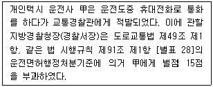
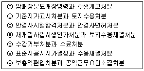
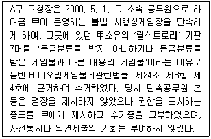
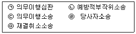

경찰공무원(순경)-행정법 (2012-02-25 기출문제)
1. 신뢰보호의 원칙에 관한 다음 설명 중 가장 적절한 것은?(다툼이 있는 경우 판례에 의함)
- 신뢰보호의 원칙은 판례를 통해 발전한 행정법의 원칙이지만 현재는 실정법에도 명문규정을 두고 있다.
- 헌법재판소의 위헌결정은 신뢰보호 원칙의 적용요건 중 하나인 공적 견해표명에 해당한다.
- 판례에 의하면, 행정기관의 공적 견해표명 여부를 판단할 때는 반드시 행정조직상의 형식적인 권한분장에 의하여 담당자의 조직상 지위와 임무 등에 비추어 형식적으로 판단하여야 한다.
- 판례에 의하면, 문화관광부장관이 지방자치단체장에게 한사업승인가능성에 대한 회신은 사업신청자인 민원인에 대한 공적 견해표명이다.
(정답률: 알수없음)

2. 행정법관계의 특질에 관한 다음 설명 중 가장 적절하지 않은 것은? (다툼이 있는 경우 판례에 의함)
- 불가쟁력이 발생한 행위라도 행정청은 직권으로 취소할 수 있다.
- 판례에 의할 때, 무효가 아닌 위법한 조세부과처분에 의하여 국세를 이미 납부한 개인이 제기한 부당이득반환청구사건에서 법원은 청구를 인용하여야 한다.
- 불가변력은 법령상 명문의 규정이 없는 경우에도 행정행위의 성질에 비추어 인정되는 효력이다.
- 민사법원은 국가배상책임의 요건인 행정행위의 위법여부를 심리·판단할 수 있다는 것이 판례의 입장이다.
(정답률: 알수없음)
3. 다음 중 공법상의 특별권력관계(특별행정법관계)가 아닌 것은?
- 경찰공무원의 근무관계
- 전염병환자의 강제수용
- 국립대학과 재학생과의 관계
- 국가와 납세자와의 관계
(정답률: 알수없음)
4. 다음 사례를 읽고 보기 중 판례의 태도와 가장 부합하는 것은?

- 도로교통법 시행규칙 제91조 [별표 28]에서 정한 행정처분 기준의 법적 성질은 법규명령이다.
- 도로교통법 시행규칙상의 벌점은 각 위반 항목별로 규정된 점수가 최고한도를 규정한 것으로 볼 만한 근거가 없으므로, 위 위반행위에 대한 벌점 15점은 획일적으로 받게 되는 확정점수이다.
- 벌점이 누적되면 운전면허 정지처분을 받을 위험성이 있는 것이므로 벌점의 부과는 국민의 권리·의무에 변동을 가져오는 행정처분에 해당한다.
- 위 [별표 28]의 운전면허행정처분기준은 대외적 효력이 없어 국민을 구속하지 않지만 법원은 이에 기속된다
(정답률: 알수없음)
5. 행정입법에 대한 사법적 통제에 관한 다음 설명 중 가장 적절한 것은? (다툼이 있는 경우 판례에 의함)
- 추상적 법령 제정의 여부 등은 그 자체로서 국민의 구체적인 권리의무에 직접적인 변동을 초래하는 것이 아니어서 부작위 위법확인소송이라는 행정소송의 대상이 될 수 없다.
- 행정입법에 대해서 헌법재판소는 헌법소원을 통하여 통제할 수 있으나 시행명령을 제정할 의무가 있음에도 명령제정을 거부하거나 입법부작위가 있는 경우에는 헌법소원의 대상이 되지 않는다.
- 헌법이나 법률에 반하는 시행령 규정이 대법원에 의해 위헌 또는 위법하여 무효라고 선언하는 판결이 나오기 전이라도 하자의 중대성으로 인하여 그 시행령에 근거한 행정처분의 하자는 무효사유에 해당하는 것으로 취급된다.
- 고시가 다른 집행행위의 매개 없이 그 자체로서 직접 국민의 구체적인 권리의무나 법률관계를 규율하는 성격을 가질 때에도 항고소송의 대상이 되는 행정처분에 해당되지 않는다.
(정답률: 알수없음)
6. 행정행위의 무효와 취소에 관한 다음 설명 중 가장 적절한 것은? (다툼이 있는 경우 판례에 의함)
- 음주운전을 단속한 경찰관 명의로 행한 운전면허정지처분은 취소사유에 해당한다.
- 무효인 행정행위도 상당한 시간이 경과하게 되는 경우 불가쟁력이 인정된다.
- 행정행위의 일부가 무효이면 나머지 부분도 무효라고 보는 것이 원칙이다.
- 무효인 행정행위도 취소소송의 제소요건을 갖추는 경우 취소소송의 형식으로 소제기가 가능하다.
(정답률: 알수없음)
7. 다음 부관의 설명 중 바르게 연결된 것은?
- 시설완성을 조건으로 하는 학교법인설립인가 - 해제조건
- 2012년 2월 25일까지의 도로사용허가 - 기간
- 도로점용허가에 부가된 점용료의 부가 - 부담
- 일정한 기간 내에 공사에 착수할 것을 조건으로 하는 공유수면매립면허 - 철회권 유보
(정답률: 알수없음)
8. 다음 보기 중 하자승계를 인정한 것은 모두 몇 개인가?(다툼이 있는 경우 판례에 의함)

- 2개
- 3개
- 4개
- 5개
(정답률: 알수없음)
9. 법률행위적 행정행위에 관한 다음 설명 중 가장 적절한 것은? (다툼이 있는 경우 판례에 의함)
- 특정인을 위해 권리·능력 또는 포괄적 법률관계 기타 법상의 힘을 설정·변경·소멸시키는 행정행위를 특허라 하며, 이러한 특허에는 여객자동차운수사업법에 의한 개인택시면허를 들 수 있다.
- 타인의 법률적 행위를 보충하여 그 법률적 효력을 완성시켜 주는 행정행위를 인가라 하며, 인가의 예로는 공유수면매립법상의 공유수면매립면허가 이에 해당한다.
- 다툼의 여지가 있는 일정한 사실이나 법률관계가 존재하는 것인가 아닌가 또는 정당한 것인가 아닌가를 공적으로 판단하여 확정하는 행정행위를 공증이라 하며, 공증의 예로는 토지대장에의 등재가 이에 해당한다.
- 타인의 행위를 유효한 행위로 받아들이는 행정행위를 수리라 하며, 이러한 수리 중 '체육시설업자 등이 제출한 회원모집계획서에 대한 시ㆍ도지사의 검토결과 통보'의 경우 대법원은 법적 효과를 발생하지 아니하는 수리행위로서 처분성이 인정되지 않는다고 보았다.
(정답률: 알수없음)
10. 행정질서벌(과태료)에 관한 다음 설명 중 가장 적절한 것은? (다툼이 있는 경우 판례에 의함)
- 행정질서벌인 과태료에 관한 일반법이 없으므로 형법총칙이 적용된다.
- 대법원은 행정형벌과 행정질서벌은 그 성질이나 목적을 달리하는 별개의 것이므로 행정질서벌인 과태료를 납부한 후에 형사처벌을 한다고 하여 이를 일사부재리의 원칙에 반하는 것이라고 할 수는 없다고 보고 있다.
- 헌법재판소는 행정형벌과 행정질서벌은 서로 다른 성질의 행정벌이므로 동일 법규위반행위에 대하여 형벌을 부과 하면서 행정질서벌인 과태료까지 부과하였다 하더라도 이중처벌금지의 기본정신에 배치되는 것은 아니라고 보고 있다.
- 행정질서벌 부과의 근거는 국가의 법령에 의하여야 하므로 지방자치단체의 조례에 근거하여 과태료를 부과할 수 없다.
(정답률: 알수없음)
11. 공법상 계약에 관한 다음 설명 중 가장 적절하지 않은 것은? (다툼이 있는 경우 판례에 의함)
- 현행 행정절차법은 공법상 계약에 관한 일반적 규정을 두고 있지 않다.
- 공법상 계약은 법령에 의하여 체결의 자유와 형성의 자유가 제한될 수 있다.
- 공법상 계약에 관한 다툼은 항고소송의 대상이 되는 것이 일반적이다.
- 공법상 계약의 경우에도 법률우위의 원칙이 적용되므로 법령상의 한계를 지켜야 한다.
(정답률: 알수없음)
12. 행정행위에 관한 다음 설명 중 가장 적절하지 않은 것은?(다툼이 있는 경우 판례에 의함)
- 행정행위의 공정력을 직접적으로 인정하는 명문규정은 없다.
- 대법원은 교육과학기술부장관의 교과서검정에 관한 처분과 관련하여 법원이 교과서의 저술내용이 교육에 적합한지의 여부를 심사할 수 있다고 보았다.
- 행정행위를 한 처분청은 그 행정행위에 하자가 있는 경우 별도의 법적 근거가 없더라도 스스로 행정행위를 취소할 수 있다.
- 무효사유의 하자가 있는 행정행위에 대해서는 불가변력이 발생하지 않는다.
(정답률: 알수없음)
13. 「행정절차법」에 의한 행정절차와 그 법적 효과에 관한 다음 설명 중 가장 적절한 것은? (다툼이 있는 경우 판례에 의함)
- 의견제출을 위하여 당사자 등은 행정절차법에 의하여 당해 사안의 조사결과에 관한 문서 기타 당해 처분과 관련되는 문서의 열람 또는 복사를 요청할 수 있다.
- 이유제시의 하자는 무효사유와 취소사유의 구별기준에 따라 무효인 하자나 취소할 수 있는 하자가 된다. 판례는 이유제시의 하자를 통상 무효사유로 보고 있다.
- 사전통지·의견제출 절차의 대상이 되는 처분은 '의무를 부과하거나 권익을 제한하는 처분'인데, 여기에 신청에 대한 거부처분이 당연히 포함되는 것은 아니다.
- 행정청이 어떤 처분을 하였는지가 분명하더라도 처분경위나 처분 이후의 상대방의 태도 등 다른 사정을 고려하여 처분서의 문언과는 달리 다른 처분까지 포함되어 있는 것으로 확대해석할 수 있다.
(정답률: 알수없음)
14. 행정의 실효성확보수단에 관한 다음 설명 중 가장 적절한 것은?
- 대집행의 절차로는 계고, 대집행영장에 의한 통지, 직접강제, 비용의 징수 순으로 진행된다.
- 행정벌에는 행정형벌과 행정질서벌이 있으며, 행정질서벌의 종류로는 과태료와 과징금이 있다.
- 행정상 강제집행에는 대집행, 강제징수, 집행벌(이행강제금), 직접강제가 있다.
- 공무원에 대한 징계처분은 행정벌에 속한다.
(정답률: 알수없음)
15. 다음은 행정상 즉시강제에 관한 사례이다. 보기 중 가장 적절하지 않은 것은? (다툼이 있는 경우 판례에 의함)

- 행정상 즉시강제는 그 본질상 행정목적 달성을 위하여 불가피한 한도 내에서 예외적으로 허용된다.
- 단속을 실시하는 중에 영장이 없다는 이유로 甲이 저항하자 단속공무원 乙 등이 과도하게 실력행사를 하여 甲에게 손해를 가하였다면 국가배상의 문제가 발생할 소지가 있다.
- 단속하기 전 甲에게 사전통지나 의견제출의 기회를 부여하지 않았다고 하여 적법절차 원칙에 위반되는 것으로는 볼 수 없다.
- 행정상 즉시강제에도 원칙적으로 영장주의가 적용되므로 단속공무원 乙 등이 영장없이 단속한 행위는 바로 위법한 것이 된다.
(정답률: 알수없음)
16. 다음 중「국가배상법」상 영조물의 하자로 인한 배상책임에 관한 판례의 태도와 부합하지 않은 것은?
- '영조물 설치 또는 하자'에 관한 제3자의 수인한도의 기준을 결정함에 있어서는 일반적으로 침해되는 권리나 이익의 성질과 침해의 정도뿐만 아니라 침해행위가 갖는 공공성의 내용과 정도, 그 지역환경의 특수성, 공법적인 규제에 의하여 확보하려는 환경기준, 침해를 방지 또는 경감시키거나 손해를 회피할 방안의 유무 및 그 난이 정도 등 여러 사정을 종합적으로 고려하여 구체적 사건에 따라 개별적으로 결정하여야 한다.
- 재정사정은 참작사유에는 해당할지언정 안전성을 결정지을 절대적 요건에는 해당되지 않는다.
- 집중호우로 제방도로가 유실되면서 그 곳을 걸어가던 보행자가 강물에 휩쓸려 익사한 경우, 사고 당일의 집중호우가 50년 빈도의 최대강우량에 해당한다면 불가항력에 기인한 것으로 볼 수 있다.
- 안전성의 구비 여부를 판단함에 있어서는 제반사정을 종합적으로 고려하여 설치ㆍ관리자가 그 영조물의 위험성에 비례하여 사회통념상 일반적으로 요구되는 정도의 방호조치 의무를 다하였는지 여부를 그 기준으로 삼아야 한다.
(정답률: 알수없음)
17. 국가배상책임에 관한 다음 설명 중 판례의 태도와 가장 부합하는 것은?
- 국가배상법은 생명·신체의 침해에 대한 위자료의 지급만을 규정하고 있으므로, 재산권의 침해에 대해서는 위자료를 청구할 수 없다.
- 현역병으로 입대하여 소정의 군사교육을 마친 다음 교도소의 경비교도로 전임된 자는 국가배상법 제2조 제1항 단서 소정의 어느 신분에도 해당하지 않으므로, 국가배상을 청구하는 것을 방해받지 않는다.
- 법관이나 헌법재판소 재판관은 국가배상법 제2조에서 말하는 공무원에 해당하지 않는다.
- 국가배상청구소송은 행정소송으로 제기해야 한다.
(정답률: 알수없음)
18. 행정심판의 재결에 관한 다음 설명 중 가장 적절하지 않은 것은? (다툼이 있는 경우 판례에 의함)
- 처분의 위법·부당에 대한 판단의 기준시점은 원칙적으로 처분시점을 기준으로 판단해야 한다.
- 원처분에 대한 형성적 취소재결이 확정된 후에 행한 처분청의 원처분 취소처분은 항고소송의 대상이 된다.
- 행정심판위원회는 심판청구서를 받은 날로부터 60일 이내에 재결을 하여야 하나, 위원장 직권으로 연장할 수 있다.
- 재결의 기속력은 당해 처분에 관한 재결주문 및 그 전제가 된 요건사실의 인정과 판단에만 미친다.
(정답률: 알수없음)
19. 행정소송의 당사자능력과 원고적격에 관한 다음 설명 중 가장 적절하지 않은 것은? (다툼이 있는 경우 판례에 의함)
- 환경영향평가 대상지역 밖에 거주하는 주민이라도 침해 또는 침해우려의 입증여부와 관계없이 헌법상의 환경권 또는 환경정책기본법에 근거하여 공유수면매립면허처분과 농지개량사업시행인가처분의 무효확인을 구할 원고적격이 인정된다.
- 자연물인 도롱뇽 또는 그를 포함한 자연 그 자체로서는 소송을 수행할 당사자능력을 인정할 수 없다는 것이 판례의 태도이다.
- 국가가 국토이용계획과 관련한 기관위임사무의 처리에 관하여 지방자치단체의 장을 상대로 취소소송을 제기할 수 없다.
- 환경상 이익에 대한 침해 또는 침해 우려가 있는 것으로 사실상 추정되어 원고적격이 인정되는 자는 환경상 침해를 받으리라고 예상되는 영향권 내의 주민들을 비롯하여 그 영향권 내에서 농작물을 경작하는 등 현실적으로 환경상 이익을 향유하는 자도 포함된다고 할 것이나, 단지 그 영향권 내의 건물·토지를 소유하거나 환경상 이익을 일시적으로 향유하는데 그치는 자는 포함되지 않는다고 할 것이다.
(정답률: 알수없음)
20. 다음 보기 중 현행법상 허용되지 않는 행정쟁송수단으로 옳게 짝지어진 것은?

- ㉠,㉡
- ㉣,㉤
- ㉢,㉣
- ㉡,㉢
(정답률: 알수없음)